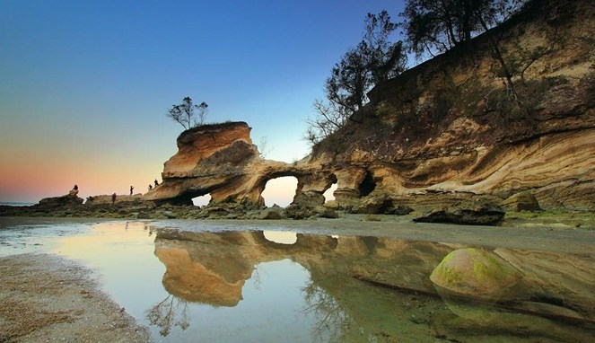

East Sumba Tourism
Welcome to East Sumba
Culture, Cultural Tourism, Nature Tourism, & Tourism Events Travel Enjoy the Beauty of Nature Join With Us Tourism in East Sumba.
Information
Pesona wisata Sumba Timur yang terdiri dari 2/3 dataran rumput dengan tekstur bebatuan besar batu karang. Savana berbatu dengan langit biru menawan menjadi ciri khas Sumba. Tidaklah heran kawasan daerah Sumba sering di jadikan obyek sebagai tempat pembuatan beberapa film layar lebar yang memiliki latar belakang pesona keindahan alamnya dan juga latar belakang rumah tradisonal yang unik nan indah dengan beragam kearifan lokal dan budayanya.
Di daerah ini kita dapat menyaksikan eksotisme savana yang terpampang didepan mata jauh memandang. dengan lahan peternakan yang menjadi andalan sebagaian masyarakatnya. Dan ternak yang cukup dikenal dari daerah ini adalah kuda. Uniknya ternak kuda yang berada di kawasan ini tidak digembalakan, melainkan dilepas hidup bebas di padang rumput savana yang luas.
Hal ini dikarenakan tingkat keamanan padang rumput terjamin, sehingga para hewan ternak di biarkan hidup bebas berkeliaran di padang rumput untuk mencari makan sendiri. Dan para gembala ternak hanya bertugas untuk mengeluarkan dan menarik serta mengarahkan hewan kuda untuk kembali ke dalam kandangnya yang hanya satu kali seminggu. Melihat di sekitaran rumah penduduk Sumba yang memberikan arti dan keindahan tersendiri dari rumah adat tradisional yang khas, menjadi suguhan menarik yang tidak hanya membuat terpana kita hanya dengan savana dengan kuda-kudanya saja yang bisa kita nimati di kawasan ini. Beberapa tempat wisata menarik Sumba yang bisa kita kunjungi dan menjadi destinasi wisata pilihan alternatif kita pada saat mengunjungi kawasan Kabupaten Sumba Timur yang ada di Nusa Tenggara Timur.